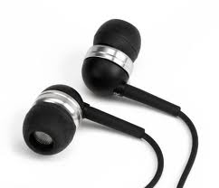
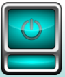
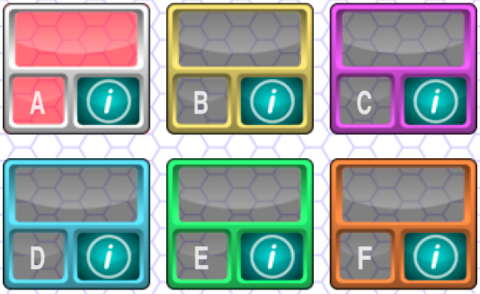
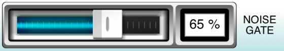
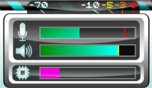

In-App Help
- Page 1: Welcome
- Page 2: Headphones
- Page 3: Power
- Page 4: Presets
- Page 5: Gate
- Page 6: Metering
- Page 7: bioaid.org.uk
Page 1: Welcome
Please read through these quick-start pages before attempting to use the software. You can navigate through the pages using the navigation buttons below, or by using horizontal swipe gestures. This help information can be accessed again at any time by tapping the ‘?’ icon in the main app window. The help system can be exited at any point by hitting the ‘X’ icon in the upper-right corner of this page.
| Click the ‘X’ to close |
Page 2: Headphones
Connect the headphones to the device before putting them on. Use the hardware volume buttons on the side of the device to adjust the headphone volume to about halfway. DON’T put the headphones on UNTIL the level has been adjusted. Hint: For best results, use headphones with a good seal, preferably with an occluded fitting (i.e. blocks the ear canal).
|  | Headphones the form an acoustic seal in the ear canal allow BioAid to protect the user from loud sounds. |
 |
Headphones that do not form an acoustic seal cannot protect the wearer from loud sounds, but will still allow amplification of quiet sounds. |
Page 3: Power
To begin audio processing, tap the power button in the upper left of the screen. The power button has three states. The power button is displayed in blue when the aid is inactive, orange when the level is fading in, and red once the aid is fully running. Once activated, BioAid will process audio in the background. Tap the power button to halt the operation of the app when not in use. This will save battery power. With the aid running, adjust the volume to a comfortable level using the hardware buttons on the side of the device.
|  | Use this button to enable / disable the sound processing |
Page 4: Presets
The mid section of the screen shows a variety of preset buttons. These allow you to choose the setting that works best for your hearing. Listen to the different presets on the home screen by tapping the buttons. The active preset is highlighted in red. For help and information on each preset, tap the ‘i’ button in the bottom right of each of the main preset buttons. The mid section is comprised of 6 pages of presets, where each page of presets corresponds to one of the home page demo presets. Use arrow buttons, or swipe horizontally to explore the various pages.
Page 5: Gate
A noise gate control can be found at the bottom of the screen. This is only intended for use when listening in quiet. The gate can reduce audible hiss at the expense of losing sensitivity to very low level sounds. The gate setting has no effect when listening in noisy environments. The sound intensity threshold of the gate can be increased by dragging the slider rightwards and decreased by dragging the slider leftwards. Experiment with the gate threshold setting when navigating the various presets.

Page 6: Metering
The component in the top right of the screen displays metering information while the power indicator is in its ‘On’ state. The top indicator shows the microphone input level. The middle indicator shows the audio output level. This is the level BEFORE the hardware volume control. The overall output level can be adjusted using the volume buttons on the side of the device.
|  | TOP: Input level MIDDLE: Output level BOTTOM: CPU Load (Algorithm only) |
Page 7: bioaid.org.uk
Thanks for taking the time to try BioAid! BioAid is a research tool, so we’d love to hear your feedback and opinions. Please visit our website to get in contact and to find more detailed information about the app. Tip: Tapping the BioAid logo at the top of the screen will launch the website.
| Click the logo to launch the website |